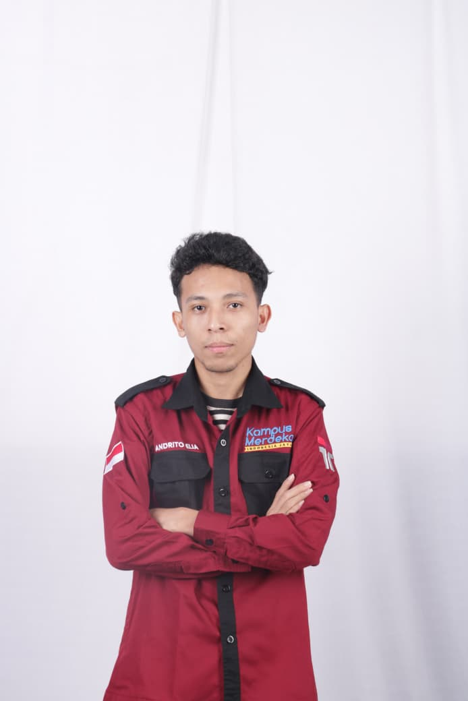

Machine Learning
Smart Waste & Detection System
Sistem informasi manajemen sampah cerdas yang dilengkapi model prediksi volume dan klasifikasi sampah otomatis berbasis CNN (Computer Vision).
Lulusan Teknik Informatika yang berdedikasi tinggi dengan keahlian di bidang Pemrograman Web, Basis Data, Jaringan Komputer, serta Keamanan Siber (Cyber Security). Siap mengembangkan inovasi berbasis teknologi informasi.

class AndritoElia:
def __init__(self):
self.degree = "S1 Teknik Informatika"
self.skills = ["Web Dev", "Database", "Cyber Security", "Machine Learning"]
self.location = "Kupang, NTT"
self.status = "Available for Hire"
def solve_problem(self, tech_challenge):
return f"Solutions created with passion & secure architecture!"
# Execute instance
dev = AndritoElia()
print(dev.solve_problem("Modern Web & Security"))Saya merupakan Lulusan Teknik Informatika yang memiliki minat mendalam dan kompetensi di bidang pemrograman, pengelolaan basis data, jaringan komputer, dan keamanan siber.
Memiliki kemampuan analitis yang tajam, disiplin, mumpuni dalam bekerja secara mandiri maupun berkolaborasi dalam tim, serta selalu siap mengembangkan keterampilan baru guna berkontribusi nyata dalam memecahkan permasalahan teknologi masa kini.
Mampu mendesain arsitektur perangkat lunak dan menganalisis sistem secara mendalam.
Komunikatif, adaptif dalam proyek kolaboratif, serta mandiri dalam penyelesaian tugas.
Memahami konsep cyber defense, secure coding, dan pengembangan sistem berbasis web modern.
Pengembangan aplikasi web modern dan logika pemrograman yang aman & efisien.
Perancangan skema ERD, optimasi query, manajemen relasi data, serta keamanan basis data.
Pemahaman mendasar keamanan siber, analisis kerentanan sistem, dan infrastruktur jaringan.
Pengelolaan topologi jaringan, konfigurasi perangkat, analisis lalu lintas data, dan IoT.
Pengolahan data, klasifikasi citra berbasis Convolutional Neural Network (CNN), dan analitik.
Perancangan kebutuhan sistem perangkat lunak, problem solving, pemateri, dan kolaborasi tim.
Sistem informasi manajemen sampah cerdas yang dilengkapi model prediksi volume dan klasifikasi sampah otomatis berbasis CNN (Computer Vision).

Sistem informasi manajemen properti perumahan untuk mengelola katalog rumah, pengembang developer, fasiltas lokasi, dan reservasi/booking unit secara daring.

Platform layanan pemesanan dan kustomisasi jahit pakaian secara online, memungkinkan pelanggan memilih model busana, estimasi pengerjaan, dan jadwal pengukuran.

Aplikasi pendataan dan pelayanan perpanjangan pajak serta administrasi surat kendaraan bermotor melalui jaringan agen SAMSAT terintegrasi.

Aplikasi pengelolaan data jemaat, struktur organisasi, inventarisasi aset gereja, serta pembukuan arus kas & laporan keuangan transparan.
Sistem kasir instan untuk pengelolaan toko kosmetik, stok barang, perhitungan total transaksi, diskon, dan cetak bukti pembayaran.

Penghargaan sebagai Finalis Nasional kompetisi keamanan siber di Jakarta.

Program pertukaran akademik antar perguruan tinggi nasional Indonesia.

Sertifikat keahlian sebagai pengajar & instruktur di bidang Keamanan Siber dan Internet of Things.

Piagam apresiasi inovasi teknologi perangkat lunak dan aplikasi berbasis digital.

Partisipasi kompetisi desain kreatif tingkat nasional pada Pekan Ilmiah dan Seni Mahasiswa.

Penghargaan atas inovasi bidang manufaktur dan penerapan teknologi terapan.

Penghargaan atas pencapaian akademik berprestasi selama masa perkuliahan Informatika.

Sertifikat sebagai pemateri dan fasilitator bimbingan mahasiswa baru informatika.

Sertifikat keikutsertaan dan pencapaian karya inovasi digital.

Sertifikat partisipasi lomba inovasi digital perguruan tinggi di Yogyakarta.
eliaandrito@gmail.com
Kupang, Nusa Tenggara Timur, Indonesia
Terbuka untuk Remote & On-Site@andritoelia
Isi formulir di bawah untuk mengirim pesan langsung ke WhatsApp Andrito Elia: